Made it to New York, after 35 years. I never understood the appeal of the City, nor why people wanted to move here, which explains my absence during my twenties. But in my thirties I suddenly felt ready, and so here I was.
If you catch the City at sunset, the views are amazing. The oceans reflect the blue sky, and the brick buildings glow a deep vermilion. The classic outdoor fire escapes do not look disorganised; they blend in well.
And the city is oddly quiet, in the south of Manhattan at least. The noise and bustle of the city seem much less than I antncipated. Neighbourhoods blend into each other, from Wall Street to Chinatown, Little Italy then Tribeca.
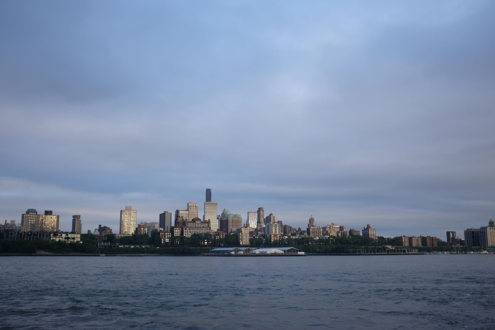 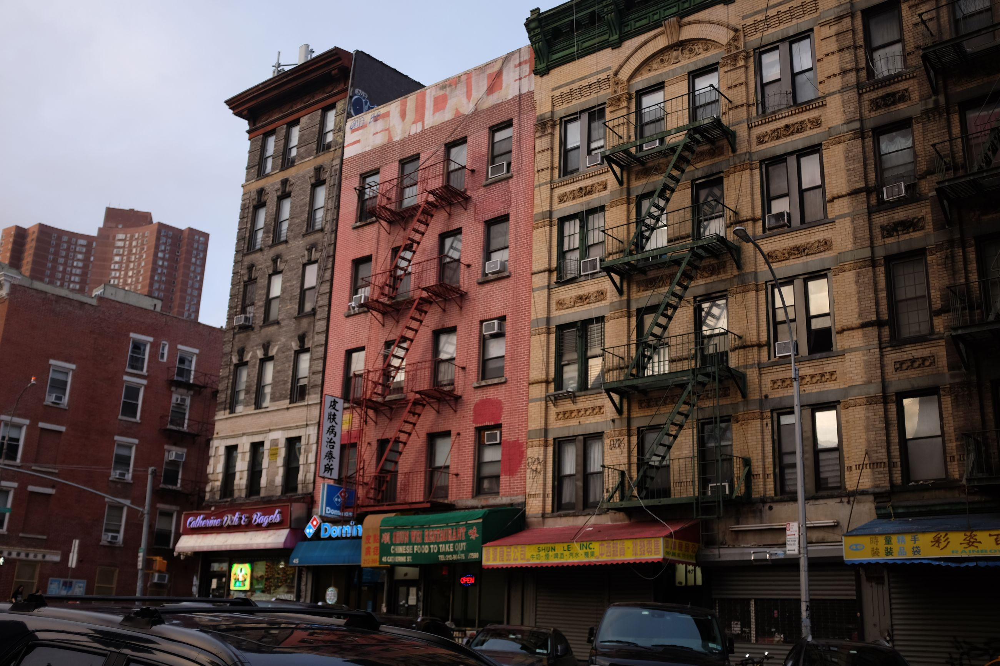 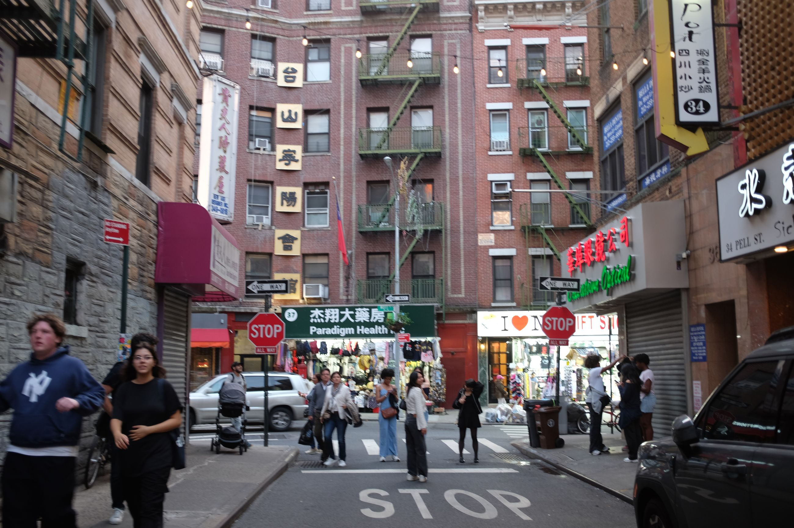 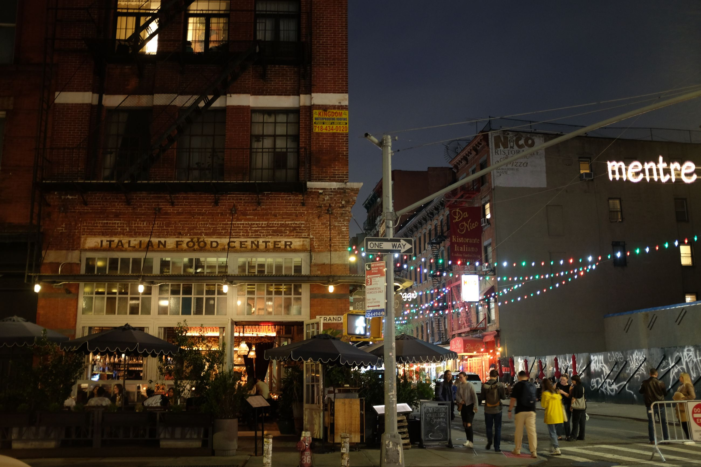
Sewers steam in the night, and the car headlights dissipate it, creating a Gotham City effect. It's still oddly quiet.
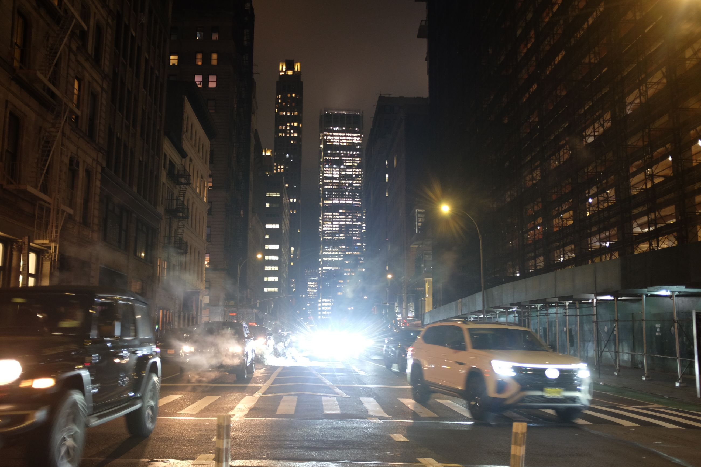
The buildings at night are eerily quiet; the morning crowd has emptied out. What's left are massive halls of science fiction buildings with the odd commuter passing through -- some fever dream of a mad scientist.
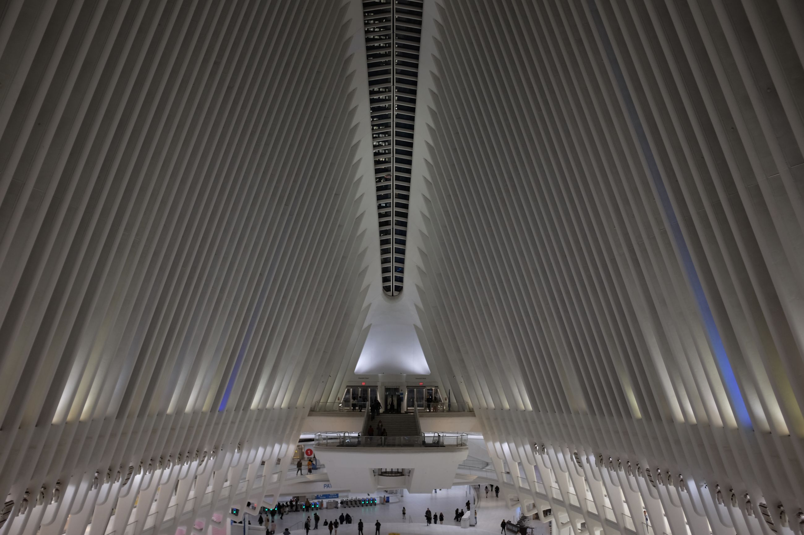
--
If you catch the City during the day, any crystalline exterior of a building reflects the sky. The exteriors constantly change and also change the view of the skyline, when you look up. The water features also do the same, twinkling like silver pellets as it falls.
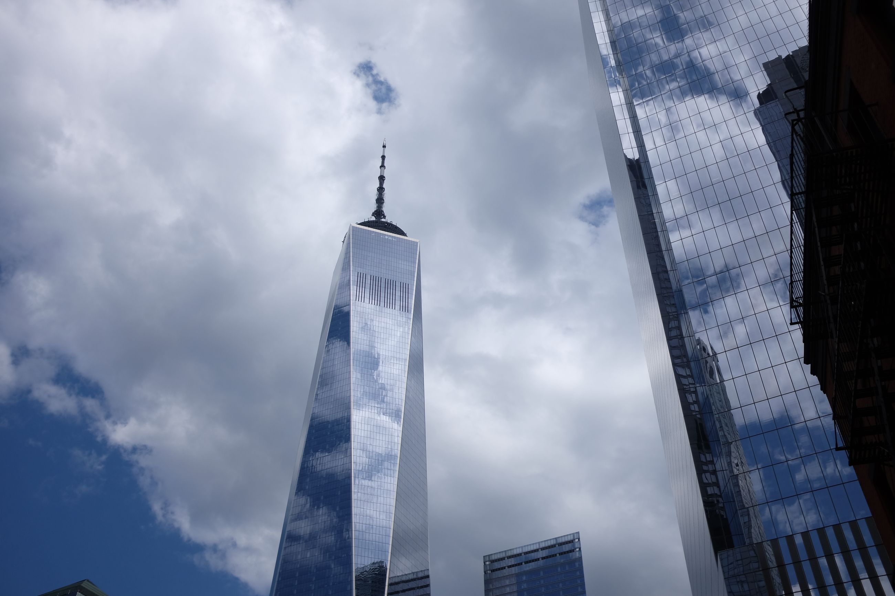 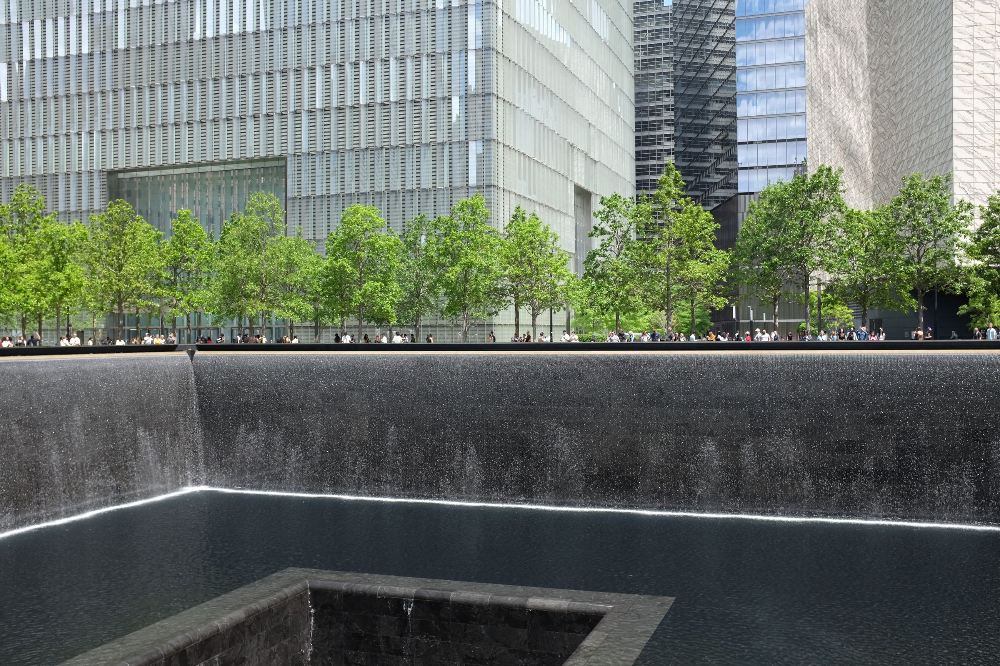 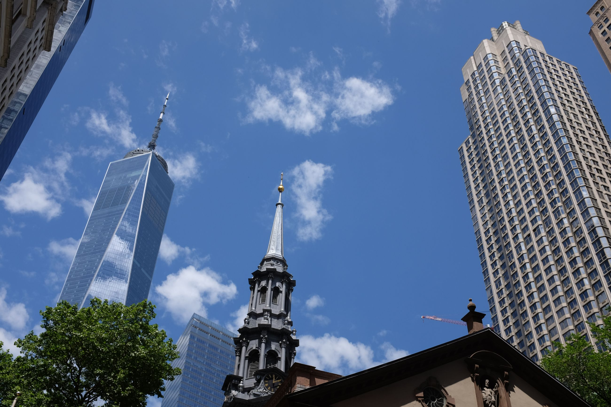
The buildings also burn much brighter against a clear sky; again, the deep red hues surfacing for a breath.
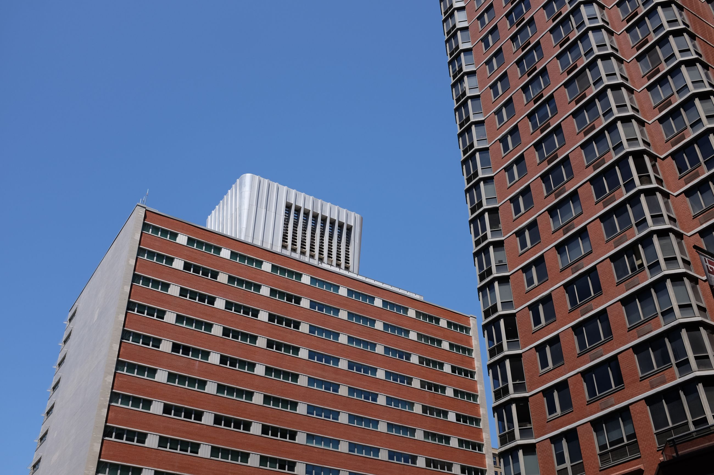
One similarity of NYC to Hong Kong (where I currently live) is water transport. Boats link Manhattan to Brooklyn, across the Hudson. Travelling short distances by boat creates the odd effect of distance, despite being nearby. Perhaps just one kilometer away as the crow flies, Brooklyn feels much further when going by boat, as if you've entered a new state. The views are just as beautiful.
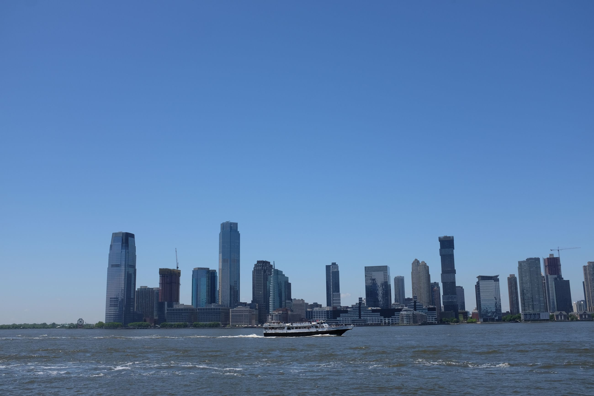 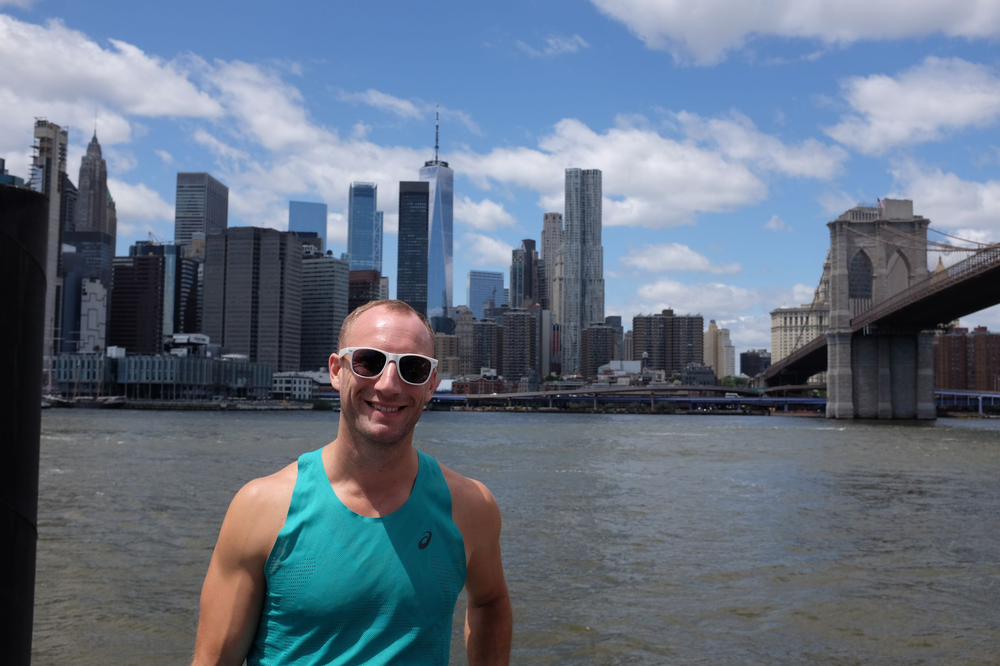
Ducking into Williamburg, Brooklyn, we see smaller buildings and a gridded hipster neighbourhood. Buildings change quickly from grunge to refurbished grunge as you walk down. Everyone is out since it's a nice day.
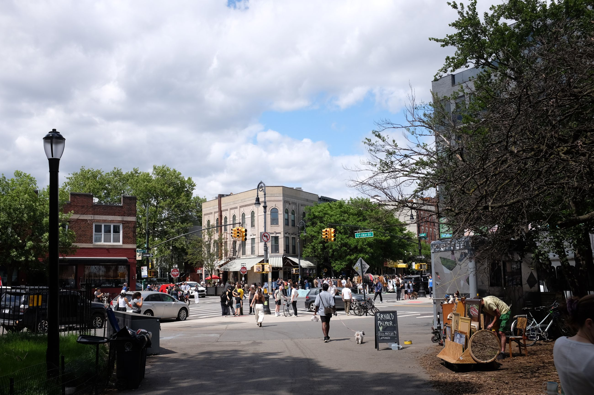 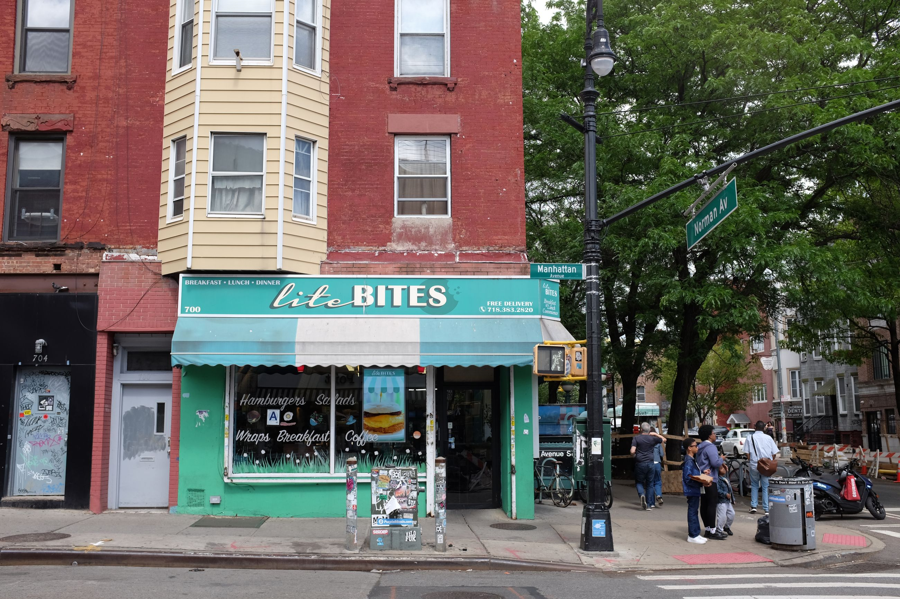
General impressions are that it's a city actually alive. People are actually in all the shops, no matter how small or tucked in an alley, so spending power is really churning the city forward. There is actual diversity; you hear different languages in every part and see different faces, so it does not feel too American (there are, however, still too many Americans). Neighbourhoods blend, so you can see something different within short distances, keeping the view fresh. The city is not nearly as dirty nor loud as I had imagined -- at least they have some sort of public transport system, which is also not that dirty. From the small bit that I'd seen, I get why many flock here now. It's like a city with Hong Kong hardware with American software and dreams.